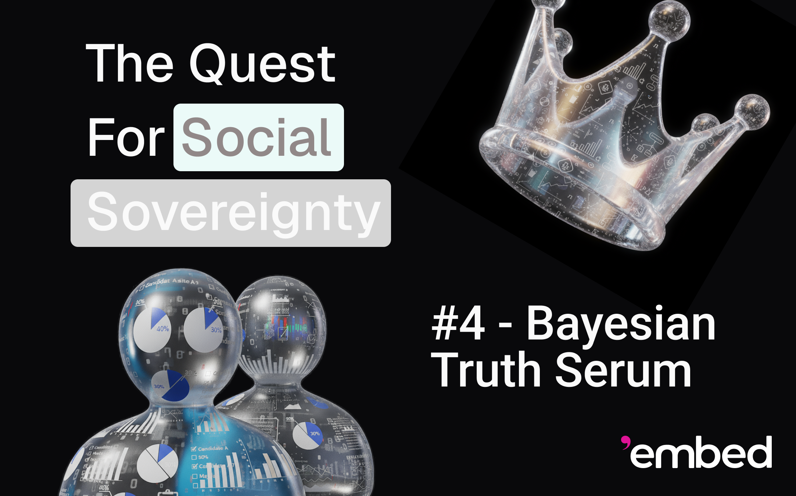

 In the previous blog post, we studied moderation mechanisms that rely on oracles, and decided to move on to more decentralized ones. In this and in the following posts, we will share a bit of our research story, going over many of the mechanisms we considered for Information Elicitation Without Verification (IEWV). Our entry point to this area of research was a mechanism trying to address the problem of untruthful replies in surveys. In some surveys, this problem is not pronounced. For instance, in political surveys, a good result for a candidate tends to benefit that candidate, so people already have the incentive to answer truthfully, i.e., to name the candidate they intend to vote on. Deceit in political surveys comes primarily from corruption of the survey organization or from exogenous incentives, such as bribes or threats, not from the mechanism's incentives. However, other kinds of surveys carry incentives that distort the quality of the survey. For example, in a political survey for who is the best candidate, people have the incentive to name the candidate they would like to win and will vote for instead (because his policies benefit the person the most), rather than the candidate they consider the best for the country overall. Again this is because a positive poll result tends to improve the chances of a candidate winning. People also tend to lie when the survey question regards intimate matters or when their answer could be self-incriminating. Furthermore, as of right now, we are experiencing times of significant political violence. Thus, in an opinion survey on a polarizing topic, people might refrain from expressing an opinion that may cause retaliation, if the privacy of the poll were to be compromised. The Bayesian Truth SerumIn 2004, Drazen Prelec [9] published the Bayesian Truth Serum [4], or BTS, an extremely clever mechanism to improve survey quality. The idea is that each participant reports not only his belief, called his signal, but also his estimate on which fraction of the other participants will report the same signal. The BTS is a formula to assign to each survey participant, or player, a score, which is meant to be monotonically converted into a monetary payout. Players then have a financial incentive to maximize this score, which is designed to create truth-telling incentives. More precisely, suppose that we have \(n\) players (\(n\) very large) and \(m\) possible choices (\(m\) small). Each player \(i\) reports a signal, seen as an indicator vector \(x_i \in \{ 0, 1 \}^m\), exactly one component of which is \(1\), the others being \(0\). Furthermore, each player \(i\) reports an estimated frequency vector \(y_i \in [0, 1]^m\) whose components sum to \(1\), where \(y_{i j}\) is his estimation of the frequency of answer \(j\), i.e., of Let \(\bar{y}_j\) be the geometric mean of the estimated frequencies for answer \(j\), i.e., Then a simplified formula for the BTS score of player \(i\) is where the constant \(\alpha > 0\) and the base of the logarithms are tuning constants not consequential in this exposition, although we will mention that setting \(\alpha = 1\) makes the scores zero-sum. The formula is made of two terms, an information score and a prediction score. Because \(n\) is large, an individual player cannot hope to affect either \(\bar{x}_j\) or \(\bar{y}_j\) directly, so, from his point of view, his information score depends only on his answer \(x_i\), while his prediction score only on his estimated frequencies \(y_i\). Therefore, rational players seek to maximize both scores independently. The prediction score simplifies to Since the entropy of the frequency vector is not under the control of player \(i\), he can only hope to maximize the remaining term, which is a strictly proper scoring rule [10], and thus is maximized by \(y_{i j} = \bar{x}_j\), creating truth-telling incentives for the reporting of estimated frequencies. Something more interesting happens with the information score. Since \(x_i\) is an indicator vector, player \(i\) should aim to choose the largest value of \(\log (\bar{x}_j / \bar{y}_j)\) over all answers \(j\). This logarithm measures how “surprisingly common” the answer is, in that its actual frequency is higher than expected. The brilliance of the BTS is the observation that the signal a player receives influences his estimation of the frequency of the signal, because the player already observed a sample of size one, so to speak. Thus, in a truth-telling Bayesian Nash equilibrium, where players report their answers and estimates truthfully, players that received the same signal will report similarly to player \(i\), while players that receive a different signal will tend to under-estimate the frequency of the signal. This is mere intuition, however. The proof of a truth-telling Bayesian Nash equilibrium has some assumptions and is presented in Prelec's work. If, instead of frequencies, the surveyor, also called the principal, wishes for one definitive answer, for instance to make a decision, he can simply pick a choice \(j\) maximizing the Surprisingly Popular (SP) score [5] given by The careful reader may have noticed that a player can bring the geometric mean \(\bar{y}_j\) to zero simply by estimating a frequency of zero. Indeed, the exposition of the BTS conducted here is simplified. In practice, BTS scores use Laplacian smoothing to avoid degeneration of the geometric mean, as well as a few other tricks, such as “leave one out” aggregates \(\bar{x}_{- i j}\) and \(\bar{y}_{- i j}\) to ensure players do not directly alter these values at all. ApplicationsThe BTS has been extensively used to improve the quality of surveys suffering from truth-telling disincentives. Prelec himself and others have applied the method to surveys on academic integrity [2] and marketing [8], but the mechanism has also been applied to Criminology [7], information crowd-sourcing via Amazon's Mechanical Turk [1], energy price forecasting [11] and even to Machine Learning [3]. Although not directly applying the Bayesian Truth Serum, Théo, the French whale who won a huge bet on Donald Trump's election on Polymarket [6], also relied on surveys of second-order beliefs, asking participants not who they thought would win, but who they thought their neighbors would vote for. Théo stated that his surveys countered the “shy Trump voter” effect, as an answer about a collective reveals less personal beliefs than a direct answer, enabling people to speak with less fear of retaliation. Shortcomings of the BTSThe BTS mechanism has a number of disadvantages that prevent its usage in content moderation. First of all, being designed for usage in surveys, the BTS is not collusion-resistant (it is generally accepted that survey participants do not collude). Our analysis assumed that individual players cannot alter the observed frequencies \(\bar{x}_j\) and their estimations \(\bar{y}_j\). However, a large coalition not only can alter these aggregates, but benefit from doing so. The attack consists of the whole of the coalition reporting a very unlikely signal and estimating frequencies truthfully (including their knowledge of the existence of the coalition). Their signal will be extremely “surprisingly common,” with a very high information score. Furthermore, the knowledge of the coalition and its strategy will make their frequency estimations more accurate than those of honest players. It is clear that mechanisms that require the estimation of frequencies are hard to make collusion resistant. Besides the user experience becoming more cumbersome with this extra report, this is the main reason we will focus our attention on minimal mechanisms, where players only report their observed signal. The BTS also has an assumption of common knowledge of common priors between players, which is very hard to argue for in a diverse crowd, such as in social media. Thus we will also look for mechanisms that are detail-free, i.e., which do not place significant assumptions on the prior knowledge of players. Another problem of the mechanism is the large population of respondents, which, in the simple form we presented, needs to be essentially infinite for the Bayesian Nash equilibrium result to hold. This is another trade-off that applies well to surveys, which interview a large population. In contrast, moderation decisions are made by only a few moderators, so we need mechanisms that work on a small population. Finally, the BTS is a very complex mechanism, with even the simplified version in this blog post already being quite difficult to grasp. Explaining the mechanism to a large population of users is close to impossible. Stating instead that truth-telling maximizes the expected payout is more akin to intimidation than to proper truth-telling incentives. Only if the BTS became popular and mainstream, with independent experts agreeing on the properties of the mechanism and propagating that trust to the public, would the BTS really have truth-telling incentives. ConclusionThe BTS is a mechanism to create truth-telling incentives in surveys in exchange for financial compensation of the participants. It is particularly important in surveys where honest reporting is contrary to already existing incentives, such as fear of retaliation or self-incrimination. However, there are a number of issues with the direct application of the BTS to the problem of decentralized moderation, particularly its lack of collusion resistance. In our next blog post, we will continue to explore IEWV mechanisms, and will focus on peer-prediction, covering mechanisms designed for smaller populations, including some improvements on the BTS. References
|